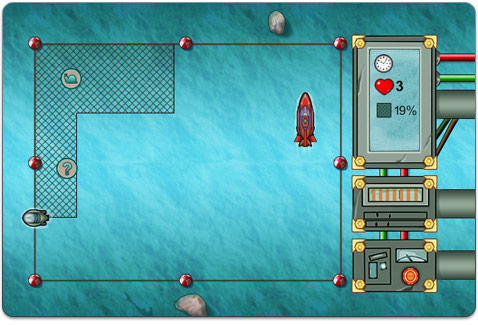

15 |
Progression du jeu |
 |
|
Vérifier votre progression
Pour voir votre nombre de points de réputation (Reputation Points), votre classement (Rank) et le nombre de pièces indice (Hint Coins) en votre possession, ouvrez Agent/Journal dans le menu du téléphone ACME (ACME Phone).
L’affaire va vraiment se compliquer, alors il est fort utile d’avoir un enregistrement de ce que vous avez trouvé pendant votre enquête. Vous pouvez revoir tout ce que vous avez fait dans l’onglet Journal.
Consultez l'onglet Messages pour les écouter à nouveau.
Se rapprocher du bandit
Si vous voulez attraper ce bandit, vous devrez tout savoir sur lui. L’onglet Information, dans Mandat (Warrant) dans le menu du téléphone ACME (ACME Phone), contient des informations sur chaque sous-fifre de V.I.L.E. de Carmen Sandiego. Placez le curseur sur un bandit puis appuyez sur
L’onglet Indices (Clues) contient les indices que vous avez trouvés sur le bandit. Avant de produire un mandat d’arrêt, vous devez utiliser les indices pour déterminer de quel bandit il s’agit. Le bandit a semé trois indices autour du monde qui vous aideront à déterminer de qui il s’agit.
Lorsque vous aurez les trois indices, vous devrez sélectionner le bandit incriminé dans la liste d'images. Placez ensuite le curseur sur l'onglet Appliquer (Apply) et appuyez sur
Attraper le bandit
Enfin, vous voilà face à face, ou plutôt proue à proue, avec le bandit!

Utilisez sur la manette Wii Remote pour déplacer votre sous-marin et dessiner une ligne sous l'eau. Dessinez une zone fermée avec ces lignes pour créer un filet.
Couvrez quatre-vingt pour cent de la zone sous-marine avec vos filets pour attraper le bandit et gagner la partie!
Mais n'oubliez pas, vous n'avez que trois vies. Vous perdrez une vie :
En cours de partie, des objets à ramasser apparaîtront à l'écran pendant environ cinq secondes. Mais attention! Tous les objets ne sont pas forcément bons à prendre!
Bonne chance, détective!
|
 |
 |
 |